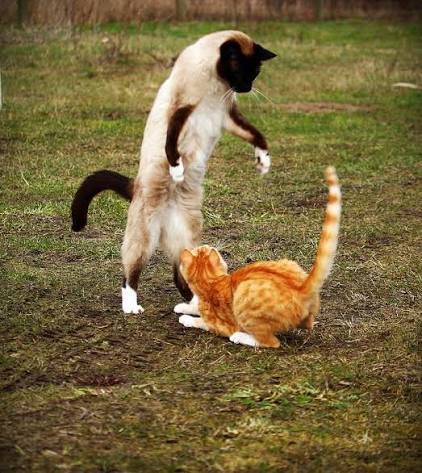

Contents list
- Definition of Oriental and Cobby
- Breeds of both cats
- Comparison of their body shape
Definitions
- Oriental
- - an elongated, lithe, and tubular build with fine bone structure and firm muscle
- Cobby
- - a cat with a short, thick, and compact body
Cat breeds in the body type
-
Oriental cats
- Siamese — has a slender, muscular body with a short subtle coat that is close to the skin.
- Oriental Shorthair — possess a sleek, musclar body with a long dwindling tail and fine-bonded legs.
-
Cobby Cats
- Persian cat — Has a round face and long hair.
- British Shorthair — Known as a stocky cat with with a thick tail/very short tail
Comparison
Oriental Cats
- Body Type: Oriental cats possess an Oriental body style. It is known to be long, slim, and fine-boned.
- Head Shape: They show a long, wedge-shaped head with very large, and wide-set ears.
- Legs and Tail: Their legs are long and thin, and their tail is long and whip-like.
Cobby Cats
- Body Type: Cobby cats have a Cobby body style. It includes descriptors like short, thick, and solid with a broad chest.
- Head shape: They have a round, large head with short ears and short, full cheeks.
- Legs and Tail: Their legs are short and thick, and their tails are short and rounded at the tip.
Key Contrast
- Oriental Cats: built like a sleek racing car with sharp lines and lean muscle.
- Cobby Cats: Built like a sturdy compact truck with round shapes and heavy bone density.
Steps for caretaking, in order
Shuffle these and you will have very mad cat on your hands.
- Feed nutritional meals: Provide high-quality wet and dry cat food tailored to your cat's specific life stage. Maintain a consistent daily feeding schedule.
- Refresh water daily: Change the water in their bowl every day or use a pet fountain to encourage drinking. Proper hydration prevents urinary tract issues.
- Scoop litter continuously: Clean the litter box at least once or twice every day. Completely empty, wash, and replace the litter every one to two weeks.
- Engage in active play: Spend 20 to 30 minutes daily using interactive toys like laser pointers or feather wands. This keeps them physically fit and mentally stimulated.
- Groom and brush regularly: Brush your cat's coat weekly to minimize shedding and prevent painful mats. Clip their nails every few weeks and brush their teeth to maintain oral health.
- Schedule veterinary checkups: Visit the vet at least once a year for routine vaccinations, parasite prevention, and health monitoring.
